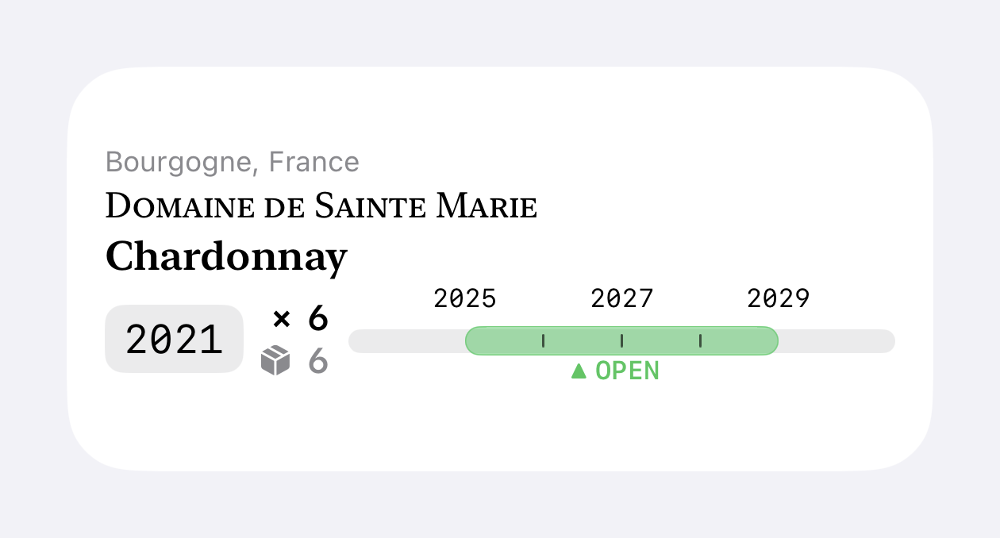
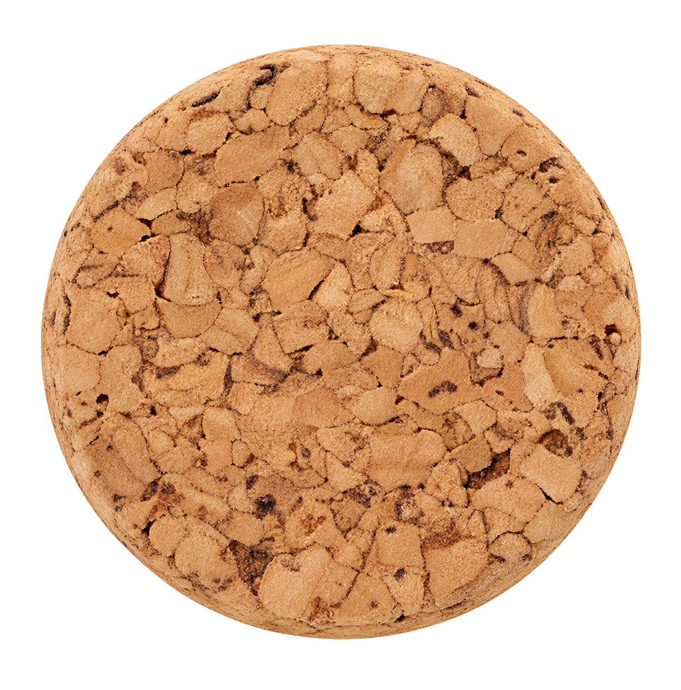
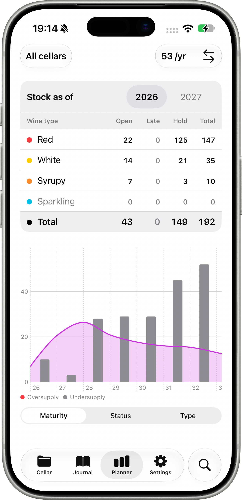
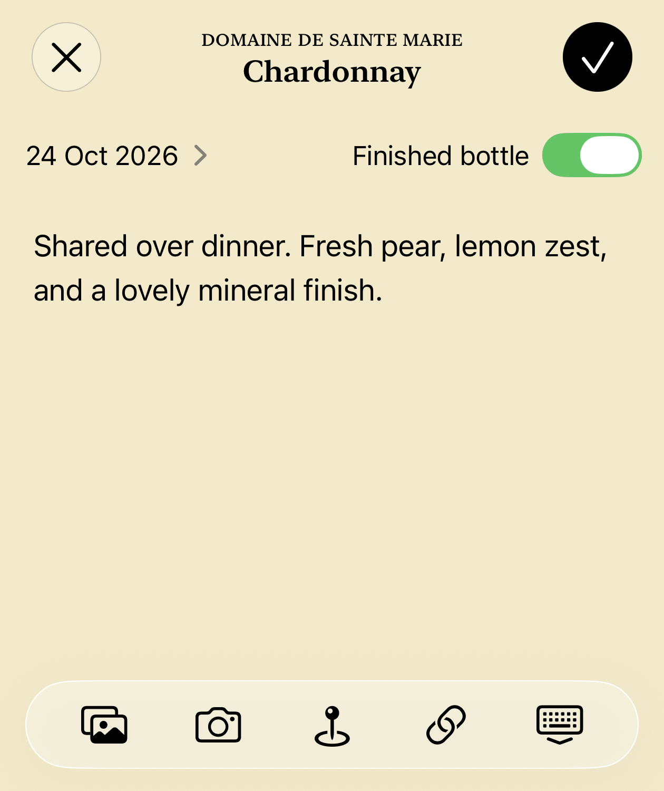
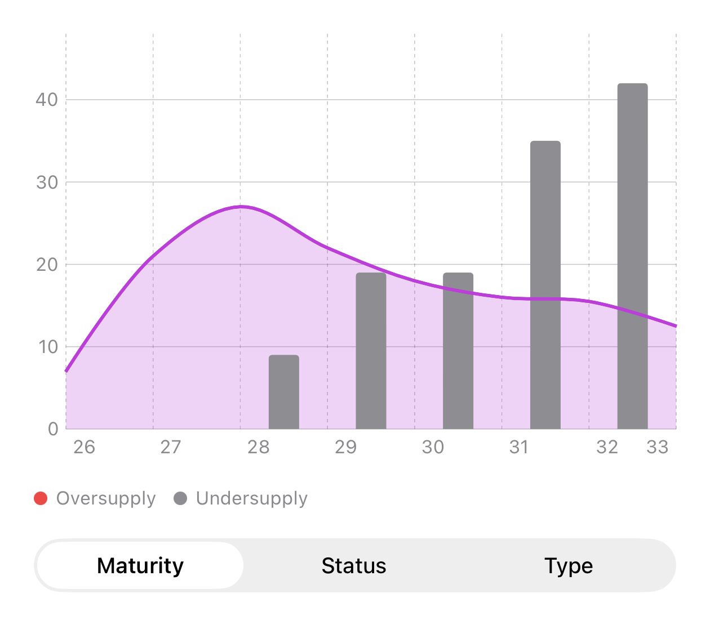
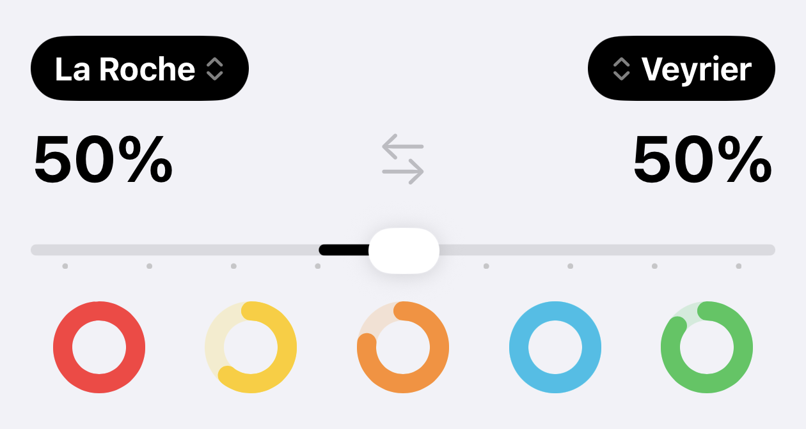
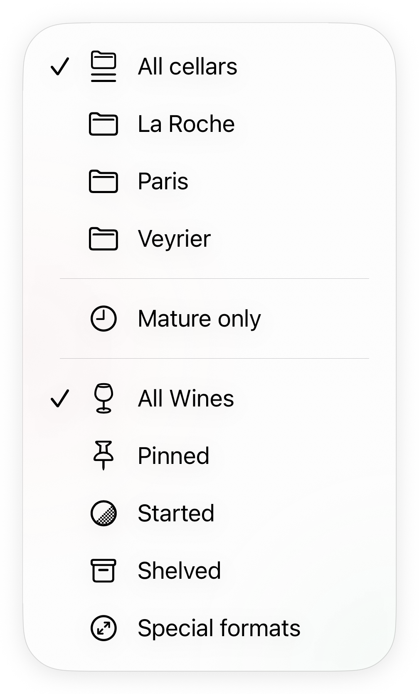
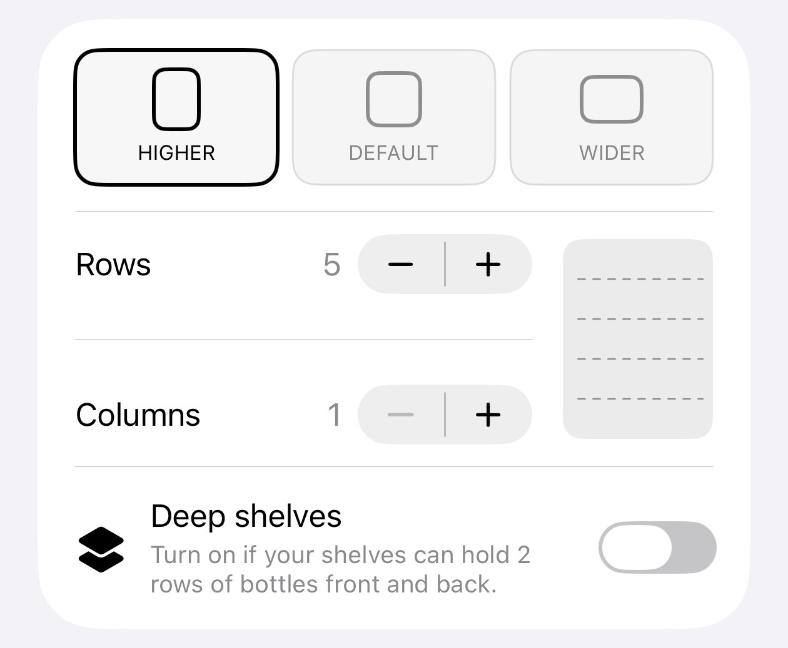
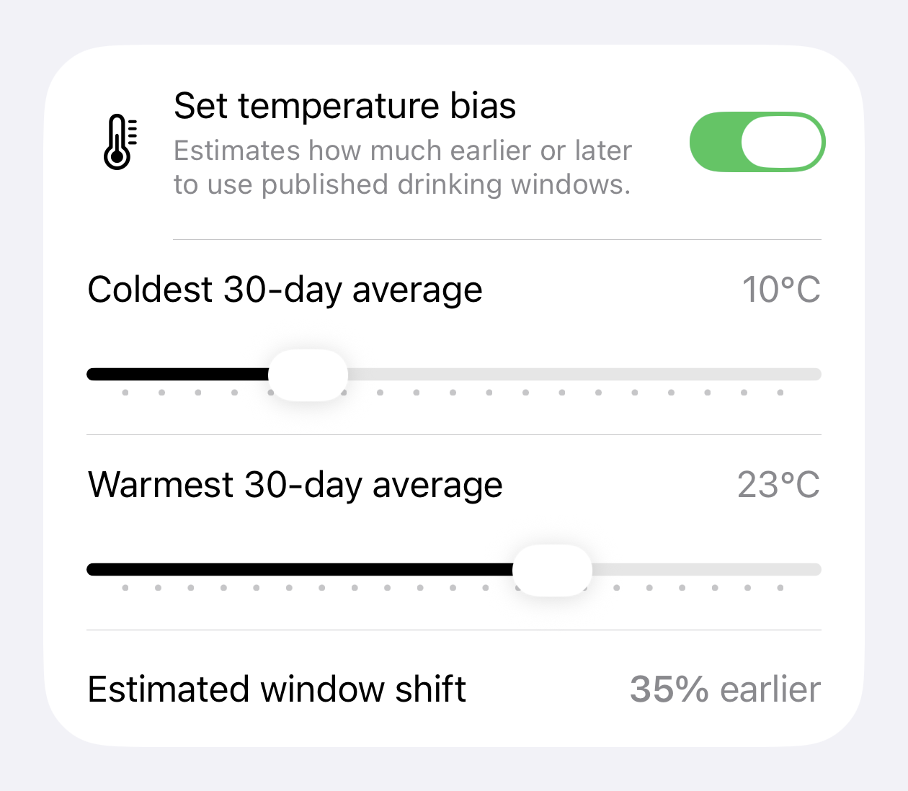

Peak drinking window
Drink your wine at its peak potential. Drive your cellar management with clear peak drinking window data.

Think of how much money and enjoyment are lost through poor wine cellar management. Pernolay is an opinionated, no-nonsense, analytical tool that helps you get the most out of your collection.




Drink your wine at its peak potential. Drive your cellar management with clear peak drinking window data.

Track and remember with the integrated note taking and journaling features.

Know what to drink, what to age, and what to purchase for maximizing future enjoyment.
Integrates with iOS so you don't even need to open the app.

Owning several houses is tough logistics. Pernolay can automatically balance your cellar distribution.

Pinned wine appear at the top, shelved ones appear at the bottom. By-the-glass opened is also supported.

Know where your bottles are with a quick and easy flick of a button.

Estimate the impact of your cellar temperature on the aging process.